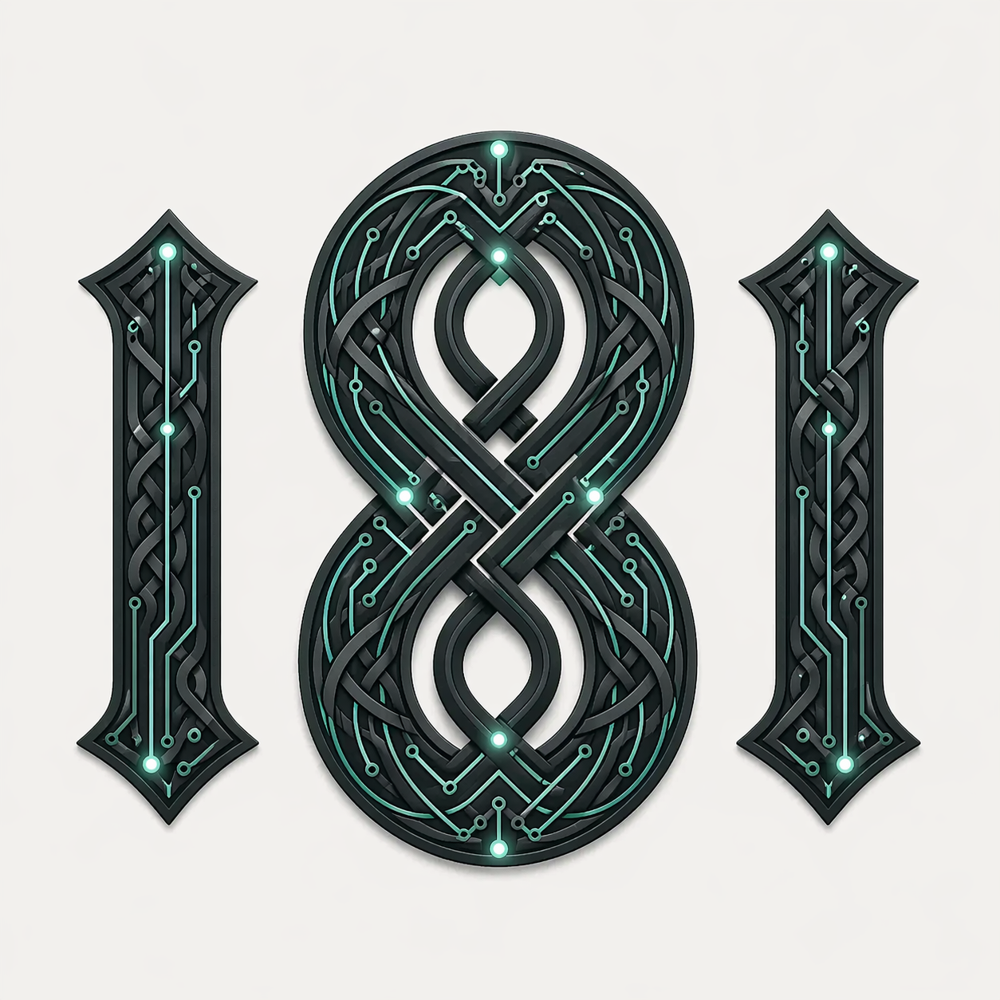

Record what you did on the job. Intrigue8 turns it into a professional invoice, client record, and profit data — automatically. No manual entry. No spreadsheets.

The problem
For contractors and service businesses across Ireland, hours disappear into invoicing, paperwork, and chasing data that should organize itself.
01
Invoicing, tracking jobs, copying notes. Billable hours wasted on work that software should handle.
02
WhatsApp, email, notebooks, spreadsheets — nothing connects. You can't see your business clearly.
03
Which jobs made money? Without clean data, you're pricing by gut — and margins suffer silently.
How it works
Intrigue8 captures what happens on the job and turns it into structured data, invoices, and insights — without manual work.
Step 01
Voice note, quick text, or photo. Log what you did on the day, in seconds.
Step 02
Agentic workflows extract client, job details, costs, and materials automatically.
Step 03
Professional invoice generated. Client records updated. Nothing to do manually.
Step 04
Every job tracked. Costs visible. Profitability by job type, client, and week.
Tell us about your biggest admin pain point. We'll use your input to build the exact system you need. Takes 3 minutes. No credit card. You'll hear from us within 24 hours.
Take the 3-min surveyTrusted by Irish contractors
Plumbers, electricians, builders, and general contractors across Cork, Dublin, and Galway are already using Intrigue8.
15–25 hours per month of admin work automated. That's €500–1,000 in reclaimed time, per contractor, per month.
We understand the West of Ireland contractor. Built for speed, profit clarity, and simplicity.